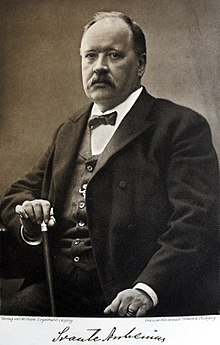

Svante Arrhenius
Svante Arrhenius var son till Svante Gustaf Arrhenius och Carolina Christina Thunberg, och brorson till Johan Arrhenius.[4] Hans förfäder var jordbrukare och hans far hade studerat till lantmätare och tagit examen 1834. Han var från 1847 anställd av Uppsala universitet som förvaltare av universitetets egendomar i västra Uppland. Efter att 1855 ha gift sig tog han en andra tjänst som förvaltare av Viks gods, där Svante Arrhenius föddes som familjens andra barn. Familjen flyttade till Uppsala 1860, där fadern blev akademifogde.
Svante Arrhenius gick på Katedralskolan, visade i unga år en fallenhet för matematik och intresserade sig även för fysik. Han tog 1876 studentexamen i Uppsala, med goda betyg, men inte som den bästa i sin klass.
Akademisk karriär
Då hans doktorsavhandling sågs som undermålig i Uppsala, blev han inte docent efter sin disputation, vilket innebar att en fortsatt akademisk bana skulle bli mycket svår för honom. Arrhenius skickade sin avhandling till de två ledande tidiga fysikaliska kemisterna, van 't Hoff i Amsterdam och Wilhelm Ostwald i Riga, för att försöka intressera dem för hans resultat. Efter viss korrespondens reste Ostwald till Uppsala för att träffa honom, och erbjöd honom då en docenttjänst i Riga, som Arrhenius avböjde.[5] Ostwalds intresse hjälpte till att visa att Arrhenius avhandling faktiskt var av mycket god kvalitet och innehöll banbrytande resultat, och han utnämndes till docent i fysikalisk kemi vid Uppsala universitet (på en oavlönad tjänst) i slutet av år 1884.